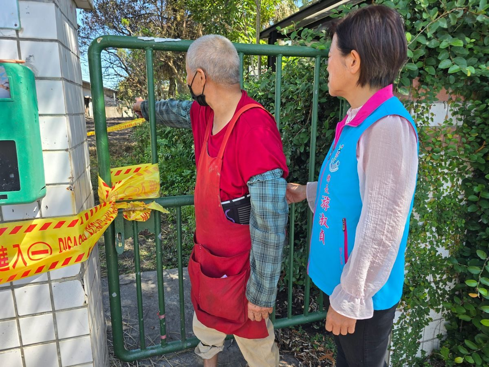

吉安鄉北安街深夜驚傳惡火鐵皮屋燒毀 游淑貞率公所團隊馳援慰助受災鄉民

可樂電子報小編/編輯
花蓮縣吉安鄉北安街一棟鐵皮屋於今（9）日凌晨發生火警，所幸起火時住戶正好外出，未造成任何人員傷亡。吉安鄉公所接獲火警通報後，立即啟動災情應變與急難關懷機制，鄉長游淑貞上午隨即率領社會課團隊、村長及村幹事趕赴受災現場關心災情，第一時間發放急難關懷金，全力協助受災民眾度過眼前難關，並承諾將持續追蹤後續需求，協助住戶早日恢復日常生活。

這起火警發生於今日凌晨0時39分許，位於北安街巷內的一棟鐵皮屋突然冒出濃煙與火舌。花蓮縣消防局接獲報案後迅速派遣第一大隊，集結仁里、吉安、花蓮、自強分隊及特搜大隊等救災單位，總計出動15輛消防與救護車輛、25名消防人員全力灌救；吉安警分局偵查隊及太昌派出所亦同步派員到場警戒，落實交通疏導與周邊秩序維護，所幸在打火弟兄全力射水搶救下，火勢迅速獲得控制並完全撲滅。

火警發生後，第一線村幹事隨即趕赴現場掌握受災狀況，並迅速向村長及鄉公所呈報。據了解，該受災建物平時由張姓鄉民承租供兒子居住，屋內存放有部分紙箱、木柴及生活雜物等易燃物品，幸好火災當下住戶並未在屋內，才未釀成傷亡憾事，詳細起火原因與財物損失目前仍由消防局火災調查科進一步鑑識調查中。

鄉長游淑貞表示，無情火災往往造成受災家庭陷入生活困境與焦慮不安，公所團隊秉持「苦民所苦、關懷至上」的施政理念，由社會課專人持續追蹤受災戶的實質需求，協助申辦各項生活救助並連結民間社會資源，全力扶助民眾重整家園。游淑貞同時提醒廣大鄉親，居家環境及周邊務必避免過度堆積紙箱、木材等易燃雜物，並應隨時檢視用電與用火安全，落實居家防火安全宣導，攜手守護家園平安。